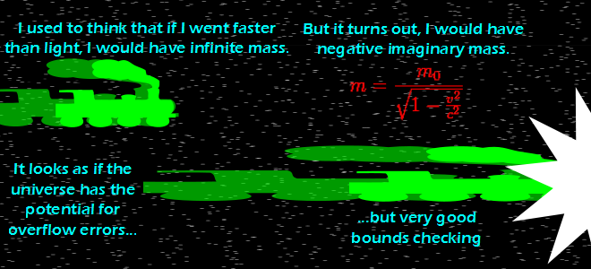

Comic JK 757
When I Feel Like It
⇤
<
?
>
⇥

⇤
<
?
>
⇥
Forum
.
RSS
.
Digg
.
Facebook
.
Reddit
.
Twitter
.
Stumbleupon
Enter your thoughts on number 757 here. Please, no spamming, trolling, or breaking the laws of physics. Your mother has infinite mass without requiring any physics-bending. You should reword the last sentence. It sort of reads like "It looks like the universe has the potential for overflow errors and also the potential for very good bounds checking" which I don't think is what you mean. > I would say it doesn't ♦read that way at all. It's pretty clear, if only because of the choice of conjunction�"and" would make it ambiguous like you mentioned, but with "but", it makes no sense to say "It looks as if( the universe has(the potential( (for overflow errors) but (very good bounds checking))))". The opposition in that interpretation is just out of place. So you're saying faster-than-light travel is a weight loss program? >Fatties in space! >Technically, it's a mass-loss program. >>Which is even better! I'd rather stay on this planet and have less fat to me, then have to move to another just so there's not as much force of gravity. >>The vast majority of "weight loss" programs are in fact actually mass loss programs. > Ergo, we should convince rich fat people to fund new space propulsion research.